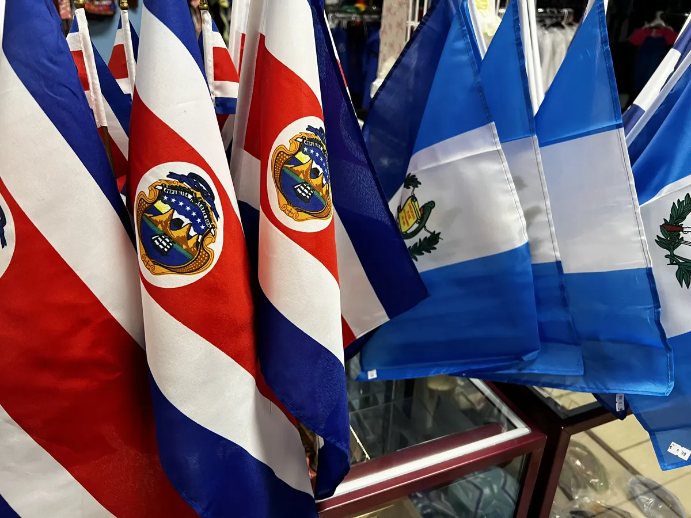

Prensa
Prensa y Reconocimientos
Documentamos el impacto de Tienda Salvadoreña en la comunidad: artículos, menciones y reconocimientos que cuentan nuestra historia.

Cobertura destacada
-
"Tienda Salvadoreña es un negocio situado en Denver, Colorado, y fue el primer comercio con productos de El Salvador fundado en esa ciudad."
Diario El Salvador · 2023 -
"La mayoría de las personas que visitan el negocio se llenan de nostalgia al ver las comidas tradicionales que encuentran."
Diario El Salvador · 2023 -
"La gente viene de todo Colorado, Wyoming y Nebraska a comprar quesos y recuerdos que él importa de su tierra."
Denverite · 2018 -
"En East Colfax, junto a la cafetería de moda Bellwether, Jorge Romero y su esposa, Delia, han dirigido una tienda salvadoreña por más de 25 años."
Denverite · 2018
Artículos destacados
Imágenes y créditos

Delia Romero sosteniendo la bandera dentro de Tienda Salvadoreña. Foto © Kevin Beaty / Denverite, 2018 
Jorge Romero detrás del mostrador. Foto © Kevin Beaty / Denverite, 2018 
Jorge y Delia con la bandera de El Salvador. Foto: Nicolle Menéndez / Diario El Salvador
Impacto comunitario
Delia y Jorge han sido reconocidos por su servicio a la comunidad, especialmente durante emergencias como los terremotos en El Salvador. La tienda ha servido como punto de encuentro cultural y apoyo para generaciones de familias.
Reconocimientos
- 1991 Primer negocio salvadoreño en Denver (1991)
- ♥ Apoyo comunitario durante crisis humanitarias